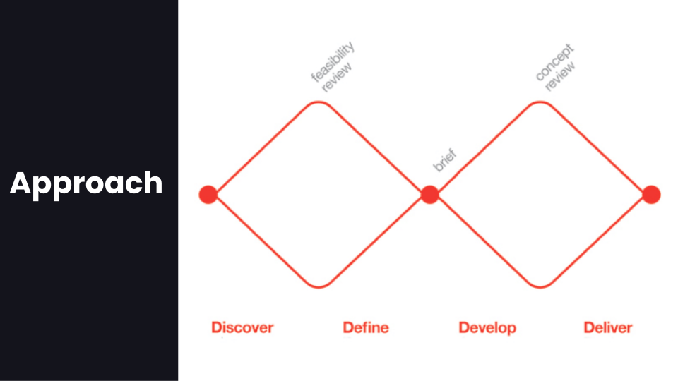
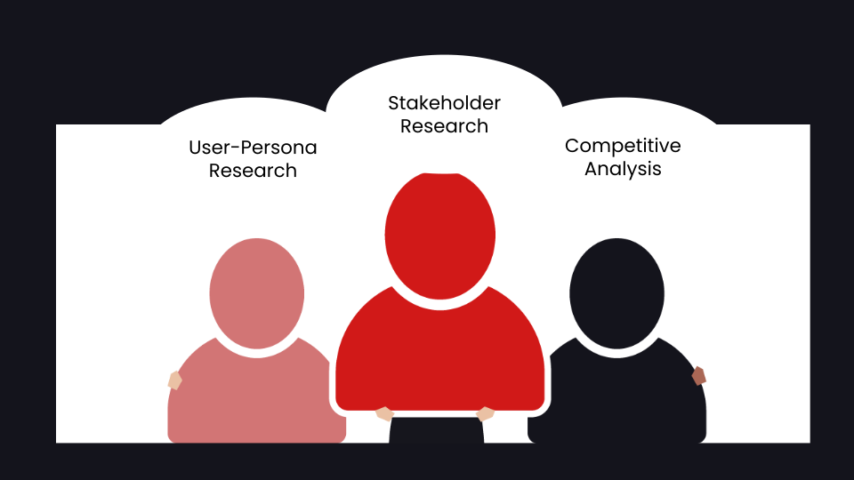
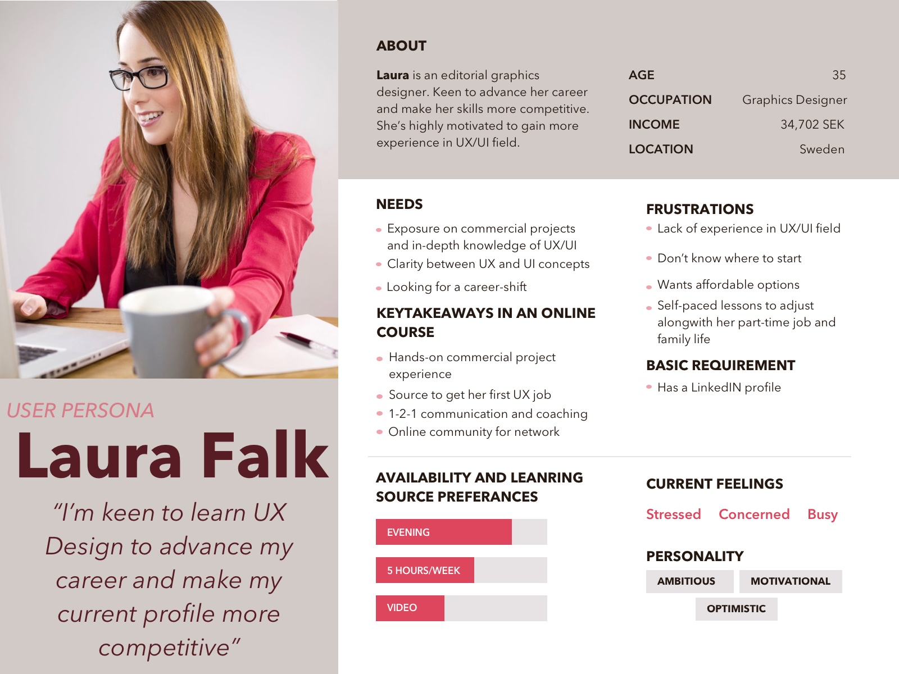
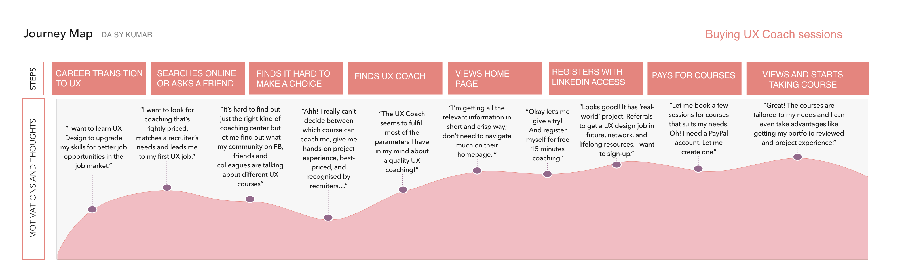

Project Context: Integral, a management consultant firm, serves world-class clients like MTV, HSBC, with Design Thinking coaching, design and consultancy since 2005.
Design Question: How to create an online onboarding experience for candidates where they can access lessons, get rewarded, take advantage of career portal and network, and find lifetime resources?
I started first with carrying on research on my user personas interviews, stakeholder interviews, technology and market analysis.
Following my interviews with user-personas, I created a user-persona analysis mood-board. More personalised, real user-personas are useful as a reference while creating content structure, flow of the dashboard, UI kit, and designing entire chain of engagement and usability.
After the research on user and interviewing the stakeholder, I went on to dive further deep into the market analysis and current competitors of the client.

My aim became to design simple and intuitive features that deliver highly-personalised experience to the target user, gives long-term support to them with an engaging community and resourceful network.
In order to get to know the target users’ behaviour better, I created a Customer Journey Map.
My focus was to design a personalised online onboarding UX Coach platform with valuable resources and network. This way I wanted to give a personalised experience to a user.

The navigation and the features like chat with the coach, users being awarded on completion of each course (based on gamification concept), would be used in making the project live in 2021.
Experience the product yourself here!
Shoot me a message atdaisykmr2@gmail.com
I love to design and simplify things for a better user experience.